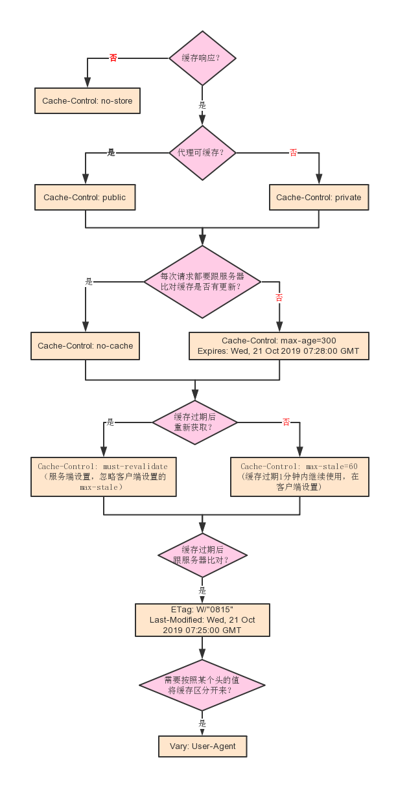

缓存在web环境各个环节都有实现，有CPU缓存、文件缓存、程序的Opcode缓存（APC,eAccelerator）、内存缓存（Memcached,Redis）、代理服务器(Nginx,Squid)、数据库的查询缓存、基于HTTP的客户端缓存。其中HTTP缓存是离用户最近的缓存，访问最快，合理使用可以加快数据加载速度、减少服务器的开销。
HTTP缓存通过设置一些头加以控制，有一部分是控制要不要缓存、怎么缓存以及缓存多久的，还有一部分是决定缓存过期以后怎么处理的。下面只列出最主要的：
注意private的应用场景，比如个人中心的url是/userinfo.php，所有人的url都是相同的，这个时候如果用了public走了代理缓存，会导致所有人共享一个缓存，所以这种时候需要使用private。
缓存一分钟，一分钟内直接读取本地缓存，一分钟后重新请求服务器：
Cache-Control: public, max-age=60, must-revalidate上面这种方式一旦缓存过期就会重新请求服务器返回最新的内容，如果内容并没有变化，那不是白传了？有没有办法在缓存过期以后判断一下如果内容没有改变则继续用本地的缓存呢？很简单！ETag可以帮到你，有效期内直接读取本地缓存，过期后跟服务器比对ETag，相同则服务器会返回304表示缓存还可以继续用，而不返回实际内容，节约了时间和带宽。
缓存一分钟，一分钟内直接读取本地缓存，一分钟以后跟服务器比对ETag，如果ETag没有变化，那么接下来的一分钟内还是直接读取本地缓存：
Cache-Control: public, max-age=60, must-revalidate
ETag: abc每次都要跟服务器比对ETag是否相同，适合更新稍微比较频繁并且需要及时显示最新内容的资源：
Cache-Control: public, no-cache
ETag: abc不缓存：
Cache-Control: no-store结合以上知识点，以服务端的视觉，结合需求来看具体需要怎么设置，画个流程图：

我们一般会在Nginx上配置静态文件的缓存，而常常忽略了动态页面和API的缓存，其实它们也是可以设置缓存的，在代码里面实现更加灵活，以PHP为例，新建一个文件命名为cache.php：
header('Cache-Control: public, max-age=60, must-revalidate');
$time = date('H:i:s');
$data = 666;
$etag = md5($data);
if($_SERVER['HTTP_IF_NONE_MATCH'] == $etag){
header("HTTP/1.1 304 Not Modified");
header('ETag: '.$etag);
exit;
}else{
header('ETag: '.$etag, true, 200);
}
echo $time.'|'.$data;上面的代码设置缓存一分钟，过期之后客户端需要和服务端通过比对ETag来确认缓存是否可以继续使用。现在可以一直点击刷新按钮看看效果，奇怪，怎么不是直接读本地缓存，老是请求到服务器返回304了呢？
点击浏览器的刷新按钮或者F5，请求头会加上Cache-Control: max-age=0，Ctrl + F5强刷会在请求头加上Cache-Control: no-cache，所以这两个操作都会导致浏览器放弃读取本地缓存而直接请求服务器。点击链接跳转和后退或者前进按钮是不会加上这些头的。
如果想看200 from disk cache读取本地缓存的效果，我们需要一个页面来做个跳转：
<!DOCTYPE html>
<html lang="zh">
<head>
<meta charset="utf-8">
</head>
<body>
<p><a href="./cache.php">这个页面被缓存了，打开看看吧。</a></p>
</body>
</html>如果是ajax请求怎么实现缓存呢？也是一样的，JS只要控制好ETag和Last-Modified就好，jquery的ajax方法里有个ifModified可以做到自动处理。
$.ajax({
type: 'GET',
url: 'api.php',
cache: true,
ifModified: true,
success: function(data, status, xhr){
if(data) {
console.log(data);
}
}
});
});
</script>
</body>
</html>如果希望每次都读取最新的内容，如果内容没更新就读缓存，可以这样做：
header('Cache-Control: no-cache');
$data = 'abcdef';
$etag = md5($data);
if($_SERVER['HTTP_IF_NONE_MATCH'] == $etag) {
header("HTTP/1.1 304 Not Modified");
header('ETag: '.$etag);
exit;
}
header('ETag: '.$etag);
echo $data;